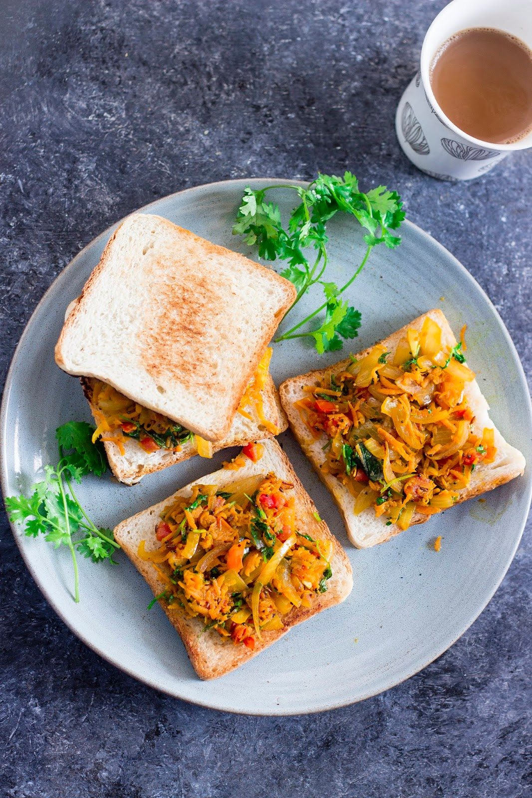
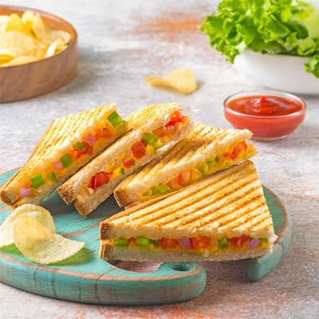

Ingredients:
1. Masala Bread Toast (5 mins)
- 2–3 bread slices
- small onion (chopped)
- 1 green chilli
- 1 tbsp curd
- Salt, chilli powder
- Butter/oil
- Mix onion, chilli, curd, salt, chilli powder.
- Spread on bread.
- Toast on tawa with little butter.
- Cook till golden.

Ingredients:
2. Instant Veg Sandwich (5 mins)
- Bread slices
- Tomato slices
- Cucumber slices
- Onion slices
- Green chutney / ketchup
- Salt & pepper
- Spread chutney.
- Layer veggies.
- Add salt & pepper.
- Toast or eat raw.

3. Bread Pizza (5 mins)
- Bread
- Tomato sauce
- Chopped veggies
- Grated cheese
- Oregano
- Spread sauce on bread.
- Add veggies & cheese.
- Microwave 1 min or tawa cook 2–3 mins.